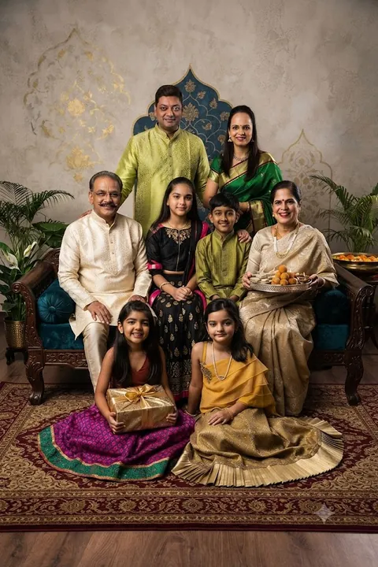
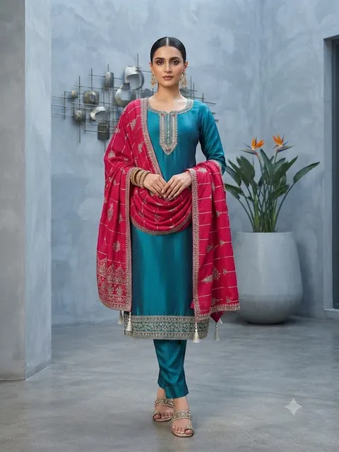
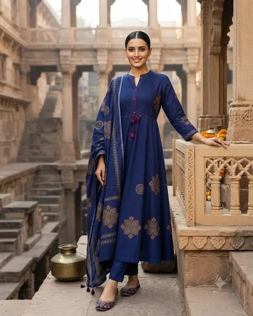

01
Sarees
Kanjeevaram, Banarasi, Paithani, Patola, Mysore silk, Gadwal, Ikat, Chanderi, Tussar and more.
See all 41 weaves →

Every wedding.
Every festival.
Every day.
Silk sarees to school uniforms, sherwanis to bedsheets. Six decades of dressing Bangalore's families. Plan your wedding shopping →
Kanjeevaram, Banarasi, Paithani, Patola, Mysore silk, Gadwal, Ikat, Chanderi, Tussar and more.
See all 41 weaves →



Wools, linens, checks and pinstripes. Cut to measure for your tailor.
See suitings →
Unstitched suits, block prints, silks and zari. Our tailors stitch them in-house.
See dress materials →
Women and men. Everyday to lounge.

Jewellery, hair accessories, footwear and toys.